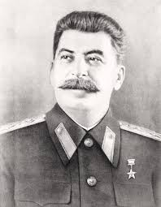
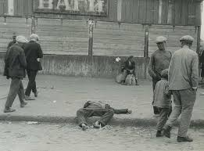
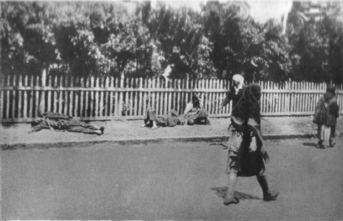

Holodomor was a man-made famine that took place in the former Soviet Union. Joseph Stalin wanted to replace local farms with state-run farms, and punish Ukranians for protesting Soviet reign. "Holodomor" comes from the Ukranian words for hunger (holod) and extermination (mor).
In 1929, Stalin began to replace locally-owned Ukranian farms with state-owned ones. The Ukranians resisted this act, because they had worked hard to earn their land, and they weren't comfortable with the government taking it away. When they fought back, Stalin declared the rebelling farmers as 'kulaks', or enemies of the state. The Soviet Secret Police made plans to deport 1,500,000 Ukranians to Siberia.
Stalin's plan didn't work as he expected. The state-owned farms disruped the economy and didn't produce as much grain as the locally-owned ones did. On top of this, Stalin was worried that Ukranians were becoming restless and because they were communicating with provinces that had fought against the Red Army ten years earlier. Stalin began looking for an excuse to get a stronger grip on Ukraine. In 1932, He found one. The harvest of 1932 was not as fruitful as previous years, due to the state-owned farms. The government set unreasonably high quotas for the farmers, and when Ukraine didn't even produce half of the amount of grain that the government demanded of them. Stalin declared that what food they had should be taken away as punishment for not producing enough grain. Homes were to be routinely searched by the secret police.
In 1933, the situation got even worse. The government started imprisoning farmers who didn't meet quotas. They exported over 1 million tons of grain to the West. As the famine worsened, some Ukranians attempted to flee the country. Some were stopped by the secret police. Some died of starvation.
After millions of Ukranians died, the USSR decided they didn't want to kill off all of Ukraine's population. They lowered the quotas and re-established thousands of families, bringing them back from Siberia. The famine was so well covered up, no other countries were aware of the suffering in Ukraine until long after Holodomor was over. It took years for Ukraine to recover.
Between 1931 and 1934 at leaat 5 million people died of hunger. They were so hungry to the point where police reported multiple descriptions of cannibalism. They would eat squirrels, cats, dogs, frogs, and turtles. In short, Holodomor was a man-made famine that was targeted against the Ukranians. It started when Ukranians protested the Russians taking away their land. The Soviet government set unreasonably high quotas for the Ukranians. Then a cycle began: Ukranian farmers would be taken away, the grain production would go down, and more farmers would be taken away as punishment.For a long time, the USSR denied that the famine had happened, and in 1937 they released a fake population census in an attempt to hide the fact that over 20% of Ukraine's previous population was dead. Stalin later acknowledged the famine but denied it was genocide. However, it is acknowledged as genocide by 16 countries.
Fedir Burtianski was heading by train the Ukraine's mines, trying to find work. They stopped in the city of Dnipropetrovsk. Fedir recounts: "At Dnipropetrovsk we got out of the carriages. I got off the wagon and I saw very many people swollen and half-dead. And some who were lying on the ground and just shaking. Probably they were going to die within a few minutes. Then the railway NKVD (secret police) quickly herded us back into the wagons." At one point, Fedir refused to buy meat in a market because he suspected it was human flesh. After this incedent, he was forced to attend the trial of a father and his two sons, who were suspected of murdering people for food. During the trial, one of the sons admitted that he had eaten his own mother. He said: "Thank you to Father Stalin for depriving us of food. Our mother died of hunger and we ate her, our own dead mother. And after our mother we did not take pity on anyone. We would not have spared Stalin himself."
Mykhaylo Naumenko's father was executed for refusing to join a collective farm. He says that people were shot if they tried to pick up seeds that were dropped on the ground. He says that he witnessed some of his neighbors gradually resort to caniballism. One of his neighbors ate their dead father, claiming that they were eating chicken meat.
Olena Mukniak was 10 in 1933. After her father left in search of food, her family roasted and ate birch leaves. Her sister worked at the state-run farm, but she only earned a small piece of bread a day, which she shared with the four of them. Her younger brother died of starvation.
Oleksa Sonipul was a 10-year old in 1933. According to her, at this time people were eating grass, tree bark, and roots. People sold all of there possesions just to get a bite to eat. The Secret Police used metal poles to search around underground when they suspected someone might have hidden grain. On Christmas, The Secret Police tore out all of their windows and doors and took them to the state-run farm.
Teodora Soroka lost nearly every member of her family during the famine. She said: "My little sister died of hunger in my arms. She was begging for a piece of bread, because to have a piece of bread in the house meant life. She pleaded for me to give her a bit of bread. I was crying and told her that we didn't have any. She told me that I wanted her to die. Believe me, it's painful even now. I was little myself then. I cried, but my heart was not torn to shreds because I couldn't understand why this was all happening. But today, and ever since I became an adult, I haven't spent a day in my life when I haven't cried. I have never gone to sleep without thinking about what happened to my family."
Applebaum, Anne. “Holodomor.” Encyclopædia Britannica, Encyclopædia Britannica, Inc., 12 Nov. 2019, www.britannica.com/event/Holodomor.
Kiger, Patrick J. “How Joseph Stalin Starved Millions in the Ukrainian Famine.” History.com, A&E Television Networks, 16 Apr. 2019, www.history.com/news/ukrainian-famine-stalin.
Makuch, Andrij, and Oleksa Eliseyovich Zasenko. “The Famine of 1932–33.” Encyclopædia Britannica, Encyclopædia Britannica, Inc., 25 Nov. 2019, www.britannica.com/place/Ukraine/The-famine-of-1932-33#ref404577.
Krushelnycky, Askold. “From The Archive: Famine Survivors Recall Horrors.” RadioFreeEurope/RadioLiberty, Radio Free Europe / Radio Liberty, 2 Feb. 2012, www.rferl.org/a/1103170.html.
TBD
TBD